37 photos libres de droits (11 BY 2.0, 4 CC0 1.0, 6 Public domain, 7 CC BY-SA 4.0, 7 CC0, 1 CC BY 2.0, 1 CC BY-SA 3.0) ; les autres mots sont dessinés dans l'application (couleurs, chiffres, famille, corps, personnes de l'école, vent). Pour remplacer une photo : donnez-moi le mot et, si vous voulez, votre propre image.
rougeأَحْمَرillustration Monte & Sourisbleuأَزْرَقillustration Monte & Sourisvertأَخْضَرillustration Monte & Sourisjauneأَصْفَرillustration Monte & Sourisblancأَبْيَضillustration Monte & Sourisnoirأَسْوَدillustration Monte & Sourisorangeبُرْتُقَالِيillustration Monte & Sourisroseوَرْدِيillustration Monte & Sourisvioletبَنَفْسَجِيillustration Monte & Souris
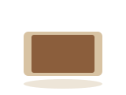
marronبُنِّيillustration Monte & Souris
numbers
un (1)وَاحِدillustration Monte & Souris
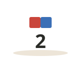
deux (2)اِثْنَانillustration Monte & Souris
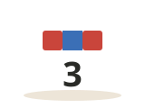
trois (3)ثَلَاثَةillustration Monte & Souris
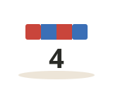
quatre (4)أَرْبَعَةillustration Monte & Souris
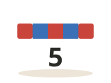
cinq (5)خَمْسَةillustration Monte & Souris
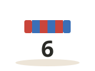
six (6)سِتَّةillustration Monte & Souris
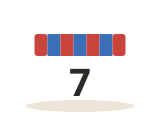
sept (7)سَبْعَةillustration Monte & Souris
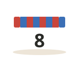
huit (8)ثَمَانِيَةillustration Monte & Souris
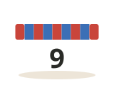
neuf (9)تِسْعَةillustration Monte & Souris
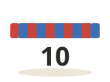
dix (10)عَشَرَةillustration Monte & Souris
family
pèreأَبّillustration Monte & Sourismèreأُمّillustration Monte & Sourisfrèreأَخillustration Monte & Sourissœurأُخْتillustration Monte & Souris
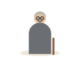
grand-pèreجَدّillustration Monte & Sourisgrand-mèreجَدَّةillustration Monte & Souris
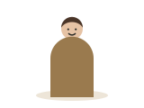
oncle (paternel)عَمّillustration Monte & Souristante (paternelle)عَمَّةillustration Monte & Sourisfilsاِبْنillustration Monte & Sourisfilleبِنْتillustration Monte & Souris
body
têteرَأْسillustration Monte & Sourisœilعَيْنillustration Monte & Sourisnezأَنْفillustration Monte & Sourisboucheفَمillustration Monte & Sourisoreilleأُذُنillustration Monte & Sourismainيَدillustration Monte & Sourispied / jambeرِجْلillustration Monte & Souriscœurقَلْبillustration Monte & Sourischeveuxشَعْرillustration Monte & Sourisdentsأَسْنَانillustration Monte & Souris
_male_6y.jpg){kind=link}
.jpg){kind=link}


.jpg){kind=link}


.jpg){kind=link}